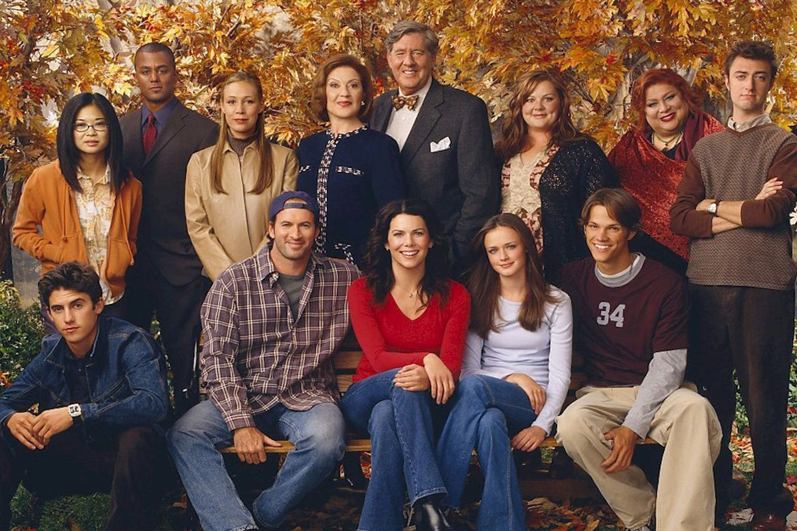

About the show
Gilmore Girls is an American TV series created by Amy Sherman-Palladino and her husband Daniel Palladino, starring Lauren Graham (Lorelai) and Alexis Bledel (Rory) as a mother and a daughter who are more friends than mother and daughter and who both dream of pursuing satisfaction in their love relationships and their careers.
Best photo ever!
Some of the cast members
- Lauren Graham
- Alexis Bledel
- Scott Patterson
- Kelly Bishop
- Edward Herman
- Keiko Agena
Links to some more websites: